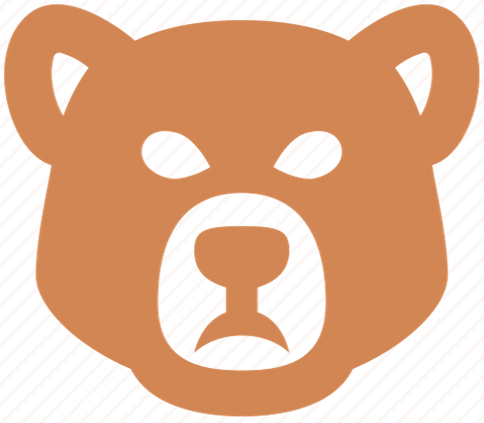
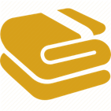

Detailed Info
Native Ruins is survival, open world game. The player can have fun discovering the island and also by solving puzzles. It takes around 30 minutes to finish the game if the player doesn't get too lost in the island.
Scripting (C#)
Here a list of main features we implements in this video game :
- Player movements (ZQSD movement in the camera's direction)
- Third person Camera (independent from the player)
- Animals artificial intelligence (movement and behavior)
- Fighting system (losing health and apply damages)
|
- Bow mechanics (aim toward mouse cursor with body rotation)
- Player animations
- Mirror's reflection script (Second Enigme with laser)
- Physics system bag (dropping objects and interact with them)
|
IA techniques
Steering Behavior
To make animals move, we decided to implements a steering behavior scripts based on vector forces. By doing that, we did not used the navigation mesh (NavMesh) already implemented in Unity. The class diagramme is available on the same section. By doing that, we let the possibility to improve animals movements way easier like squirrels going up on trees. This movement will not be simple to make only with Unity's NavMesh.
Finite State Machine (FSM)

We also decided to implements a Finite State Machine to describe animals behaviors. This allow to make human like behaviors and make it more realistic.
The agent delegate behavior transitions to the StateMachine class that take care of calling exit(), enter() and execute() functions.
We decided to code it from scratch and did not used Animation State Machines which could be useful in our case. But we had more controls by doing it that way.
In addition, as we can see in the class diagram, additionals states can be added easily to the pattern and update agent behavior. The only requirement is the relationship with the State class (extends).
Puzzles
Jumping puzzle
Our game contains two jumping puzzles.
The first one can be accomplished at the beginning of the game when the player hasn't got any additionals habilities yet. Those will be later add, thanks to spirit totems.
Native Ruins
Enigme 1 - First jumping puzzle
| Jumping actions |
| Running actions |
| Bear Totem |
Puzzle solution :
- Clim on the tree.
- Jump four times on the closer rocks.
- Climb the second log of wood.
- Make two running jumps to continue.
- Fall on the inclined rocks and jump at the right moment to land on the rock.
- Jump on the next rock and finish by a running jump.
- Press E to obtain the bear totem.

The second puzzle requires all the spirit totems : the bear totem and the wolf totem. That's why, it's the last puzzle in the game.

Native Ruins
Enigme 4 - Second jumping puzzle
| Jumping actions |
| Running actions |
| Transformation Switch |
| Rope |
Puzzle solution :
- Jump on the tree and go at the end.
- lift the tree by using the bear transformation.
- Use the Puma transformation to run and jump on the rock.
- Press E to obtain the rope.
Mirror puzzle
This puzzle is inspired from prince of percia : the player has project a laser coming from a point A to another point B to lift a fence. He can move mirrors along the room to allow the laser beam in the right direction. To not frustrated user with this puzzle, we decided to restrict to the maximum mirrors movements.
We also added the following constraint : mirrors can only be moved in bear form. This helps keep the puzzles order we decided.
Native Ruins
Enigme 2 - Mirror puzzle
| Laser beam |
| Moving bears initial positions |
| Right position |
| Sail |
Puzzle solution :
- Transform in Bear form.
- Push the closest bear in front of the beam.
- Push the second bear to hit the further mirror on the other side of the room.
- Push the last moving bear on the right to meet the beam.
- Once the gate's open, Press E near the sail to pick it up.

Action puzzle
Finally, we created an action puzzle where the player has to destroy rocks with his bear transformation. This puzzle is simple but it's the player's job to find out by himself the correct way.

Native Ruins
Enigme 3 -
| imaged Breakable rocks |
| Wolf Totem |
Puzzle solution :
- Transform in Bear form.
- Run into rocks to break them one after the other
- Once the front rocks are break, walk to the totem.
- Press E to pick up the wolf totem.
Dialogues & Cutscenes
Finally, we decided to creates in-game cutscenes to have a better user-experience. We made a complexe first cut-scene with player animations, dialogues and the game's credits.
To make it, we implemented managers, that contains data structures, which take care of animations transitions or dialogues's order. Others animations and dialogues are availables when Judy discovers new items or when hints are needed.